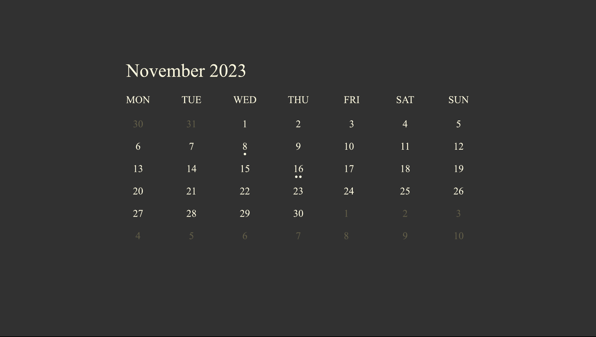
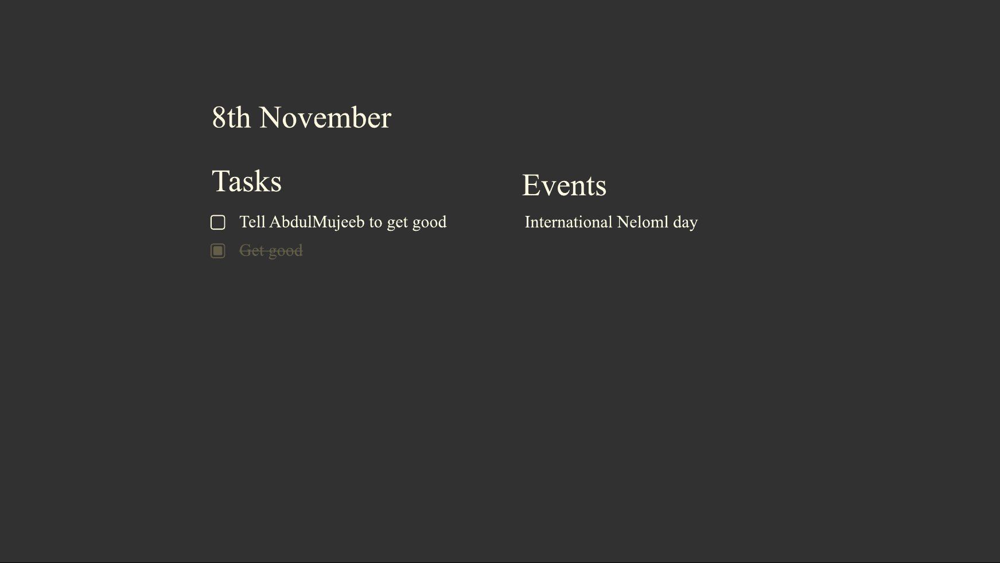

Neloml Calendar should feature a minimal design, combining hotkeys to focus on a day, in order to add events, TODO lists that display on the home screen, as well as the ability to quickly sort through and add/remove events. Events should also have the ability to be marked as done. Like all things in Neloml, the app(let) should be able to be utilised without a mouse.
